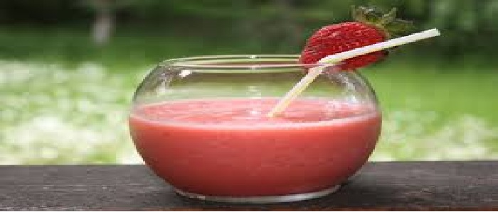

Strawberry Julius
Ingredients:
- Yield:2
- quarts Units: US | Metric
- 1 cup strawberry, sliced (Fresh is best, this is about 100-125grams)
- 1/2 cup milk (nonfat or lowfat okay)
- 1/2 cup water
- 1/4 cup caster sugar (about 50g) or 1/4 cup superfine sugar (about 50g)
- 1/2-2/3 teaspoon vanilla (extract or flavouring to preference)
Directions:
- 1 Slice up fresh strawberries until you have enough to fill a one cup measure
- 2 Add to a blender or food processor, or if you only have a stick mixer, just put it in a large pyrex jug.
- 3 Add rest of ingredients..
- 4 Blend until smooth..
- 5 You may want to try this a little bit cooler for summer days, omit the water and add a few ice cubes
- 6 I only leave out the ice cubes because my food processor can't handle hard ice..
- 7 Also it does tend to separate if you leave it sitting around for a minute, Don't let this put you off, just stir it up a bit, it tastes the same, just tends to be more frothy at the top then.